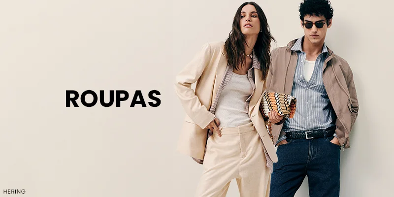
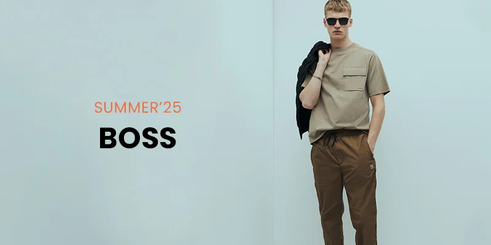

Um pouco sobre nós!
O Pin Style vem com o intuito ajudar você que ainda não tem um estilo definido. Para quem quer melhorar seu estilo, o Pin Style traz novos modelos de roupas.


O Pin Style vem com o intuito ajudar você que ainda não tem um estilo definido. Para quem quer melhorar seu estilo, o Pin Style traz novos modelos de roupas.